glmtree: logistic regression trees for efficient segmentation
Adrien Ehrhardt
2020-08-19
Source:vignettes/glmtree.Rmd
glmtree.RmdSegmentation
Three clusters, one predictive law
Simulation
library(glmtree) data = generateData(n = 1000, scenario = "no tree", visualize = TRUE)
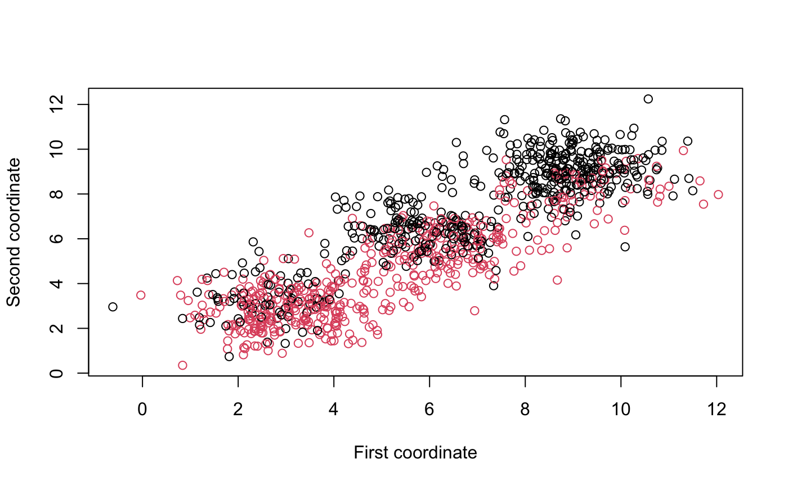
int_train = sample.int(n = 1000, size = 0.2*1000) test = data[-int_train,] data = data[int_train,]
PCA
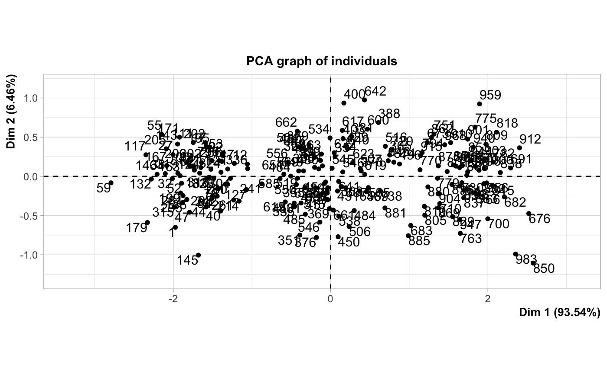
data$pca1 = predict(mixed, data)$coord[,1] data$pca2 = predict(mixed, data)$coord[,2] test$pca1 = predict(mixed, test)$coord[,1] test$pca2 = predict(mixed, test)$coord[,2] data$cluster = ifelse(data$pca1 > 1, 1, ifelse(data$pca1 > 0, 2, 3)) test$cluster = ifelse(test$pca1 > 1, 1, ifelse(test$pca1 > 0, 2, 3)) pred = matrix(0, nrow = 0.2*1000, ncol = 1) for (j in 1:3) { modele = glm(y ~ x1 + x2, data = data[data$cluster==j,], family=binomial(link = "logit")) pred[test$cluster==j] = predict(modele, test[test$cluster==j,], type="response") } normalizedGini(test$y,pred)
## [1] 0.6552414plot(mixed, choix = 'ind', label = "none")
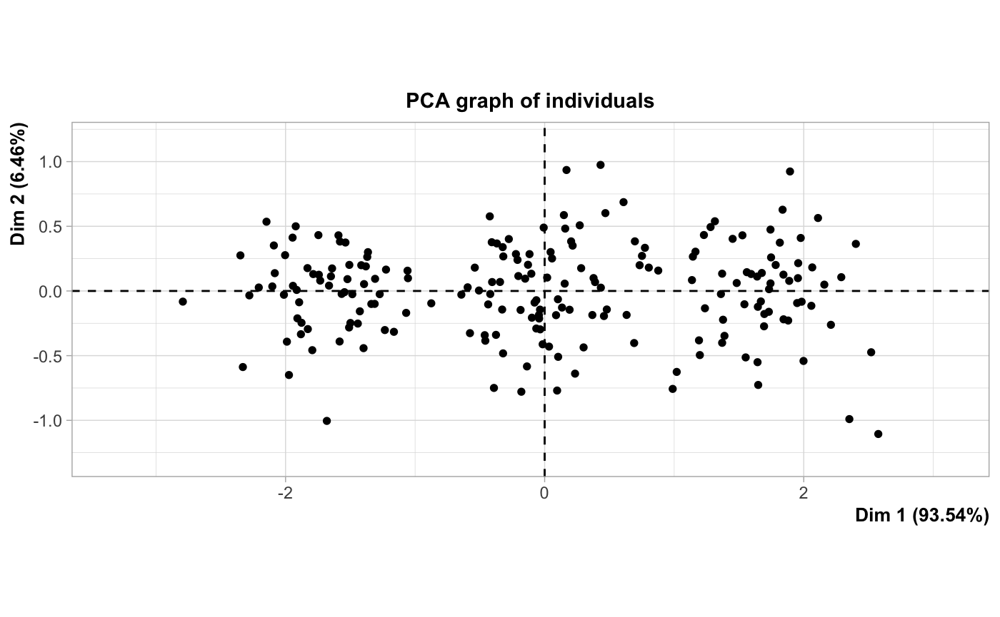
MOB
if (require(partykit, quietly = TRUE)) { mob_data = partykit::glmtree(formula = y ~ x1 + x2 | x1 + x2, data = data, family = binomial) plot(mob_data) normalizedGini(test$y, predict(mob_data,test)) }
##
## Attaching package: 'partykit'## The following object is masked from 'package:glmtree':
##
## glmtree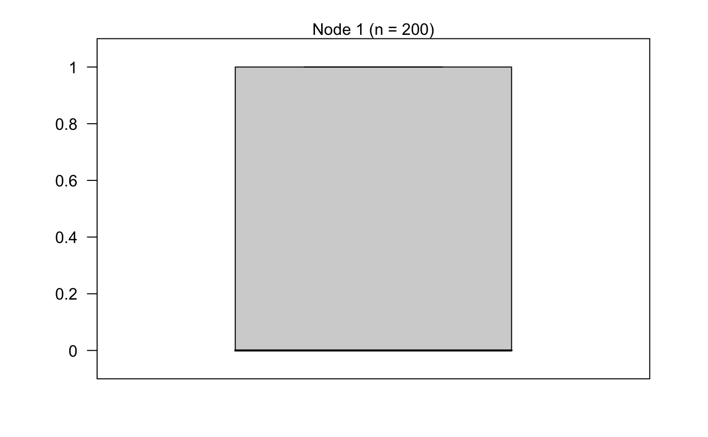
## [1] 0.6658541
glmtree approach
## The bic criterion for iteration 1 is 0## The bic criterion for iteration 2 is -196.03844127693## The bic criterion for iteration 3 is -211.519482037794## The bic criterion for iteration 4 is -196.03844127693## The bic criterion for iteration 5 is -196.03844127693## The bic criterion for iteration 6 is -211.519482037794## The bic criterion for iteration 7 is -211.513329922108## The bic criterion for iteration 8 is -211.513329922108## The bic criterion for iteration 9 is -211.513329922108## The bic criterion for iteration 10 is -211.513329922108## The bic criterion for iteration 11 is -211.513329922108## The bic criterion for iteration 12 is -196.03844127693## The bic criterion for iteration 13 is -196.03844127693## The bic criterion for iteration 14 is -196.03844127693## The bic criterion for iteration 15 is -196.03844127693## The bic criterion for iteration 16 is -196.03844127693## The bic criterion for iteration 17 is -211.519482037794## The bic criterion for iteration 18 is -211.519482037794## The bic criterion for iteration 19 is -211.513329922108## The bic criterion for iteration 20 is -211.513329922108## The bic criterion for iteration 21 is -211.513329922108## The bic criterion for iteration 22 is -211.513329922108## The bic criterion for iteration 23 is -211.513329922108## The bic criterion for iteration 24 is -211.513329922108## The bic criterion for iteration 25 is -211.513329922108## The bic criterion for iteration 26 is -196.03844127693## The bic criterion for iteration 27 is -196.03844127693## The bic criterion for iteration 28 is -196.03844127693## The bic criterion for iteration 29 is -196.03844127693## The bic criterion for iteration 30 is -196.03844127693## The bic criterion for iteration 31 is -196.03844127693## The bic criterion for iteration 32 is -196.03844127693## The bic criterion for iteration 33 is -196.03844127693## The bic criterion for iteration 34 is -196.03844127693## The bic criterion for iteration 35 is -196.03844127693## The bic criterion for iteration 36 is -196.03844127693## The bic criterion for iteration 37 is -196.03844127693## The bic criterion for iteration 38 is -196.03844127693## The bic criterion for iteration 39 is -196.03844127693## The bic criterion for iteration 40 is -196.03844127693## The bic criterion for iteration 41 is -211.519482037794## The bic criterion for iteration 42 is -211.519482037794## The bic criterion for iteration 43 is -211.519482037794## The bic criterion for iteration 44 is -211.519482037794## The bic criterion for iteration 45 is -196.03844127693## The bic criterion for iteration 46 is -211.519482037794## The bic criterion for iteration 47 is -211.519482037794## The bic criterion for iteration 48 is -211.519482037794## The bic criterion for iteration 49 is -196.03844127693## The bic criterion for iteration 50 is -196.03844127693## The bic criterion for iteration 51 is -196.03844127693## The bic criterion for iteration 52 is -196.03844127693## The bic criterion for iteration 53 is -196.03844127693## The bic criterion for iteration 54 is -211.513329922108## The bic criterion for iteration 55 is -211.513329922108## The bic criterion for iteration 56 is -211.513329922108## The bic criterion for iteration 57 is -211.513329922108## The bic criterion for iteration 58 is -196.03844127693## The bic criterion for iteration 59 is -196.03844127693## The bic criterion for iteration 60 is -196.03844127693## The bic criterion for iteration 61 is -196.03844127693## The bic criterion for iteration 62 is -196.03844127693## The bic criterion for iteration 63 is -196.03844127693## The bic criterion for iteration 64 is -196.03844127693## The bic criterion for iteration 65 is -196.03844127693## The bic criterion for iteration 66 is -196.03844127693## The bic criterion for iteration 67 is -196.03844127693## The bic criterion for iteration 68 is -196.03844127693## The bic criterion for iteration 69 is -196.03844127693## The bic criterion for iteration 70 is -211.519482037794## The bic criterion for iteration 71 is -196.03844127693## The bic criterion for iteration 72 is -196.03844127693## The bic criterion for iteration 73 is -211.519482037794## The bic criterion for iteration 74 is -196.03844127693## The bic criterion for iteration 75 is -196.03844127693## The bic criterion for iteration 76 is -196.03844127693## The bic criterion for iteration 77 is -196.03844127693## The bic criterion for iteration 78 is -196.03844127693## The bic criterion for iteration 79 is -196.03844127693## The bic criterion for iteration 80 is -196.03844127693## The bic criterion for iteration 81 is -196.03844127693## The bic criterion for iteration 82 is -196.03844127693## The bic criterion for iteration 83 is -196.03844127693## The bic criterion for iteration 84 is -196.03844127693## The bic criterion for iteration 85 is -211.519482037794## The bic criterion for iteration 86 is -196.03844127693## The bic criterion for iteration 87 is -211.519482037794## The bic criterion for iteration 88 is -211.519482037794## The bic criterion for iteration 89 is -211.519482037794## The bic criterion for iteration 90 is -211.519482037794## The bic criterion for iteration 91 is -211.519482037794## The bic criterion for iteration 92 is -211.519482037794## The bic criterion for iteration 93 is -211.519482037794## The bic criterion for iteration 94 is -211.519482037794## The bic criterion for iteration 95 is -196.03844127693## The bic criterion for iteration 96 is -196.03844127693## The bic criterion for iteration 97 is -196.03844127693## The bic criterion for iteration 98 is -211.519482037794## The bic criterion for iteration 99 is -211.519482037794## The bic criterion for iteration 100 is -211.519482037794## The bic criterion for iteration 101 is -196.03844127693## The bic criterion for iteration 102 is -196.03844127693## The bic criterion for iteration 103 is -196.03844127693## The bic criterion for iteration 104 is -196.03844127693## The bic criterion for iteration 105 is -196.03844127693## The bic criterion for iteration 106 is -196.03844127693## The bic criterion for iteration 107 is -196.03844127693## The bic criterion for iteration 108 is -196.03844127693## The bic criterion for iteration 109 is -211.519482037794## The bic criterion for iteration 110 is -211.519482037794## The bic criterion for iteration 111 is -211.519482037794## The bic criterion for iteration 112 is -211.519482037794## The bic criterion for iteration 113 is -211.519482037794## The bic criterion for iteration 114 is -211.519482037794## The bic criterion for iteration 115 is -211.519482037794## The bic criterion for iteration 116 is -211.519482037794## The bic criterion for iteration 117 is -211.519482037794## The bic criterion for iteration 118 is -211.519482037794## The bic criterion for iteration 119 is -211.519482037794## The bic criterion for iteration 120 is -211.519482037794## The bic criterion for iteration 121 is -211.519482037794## The bic criterion for iteration 122 is -196.03844127693## The bic criterion for iteration 123 is -196.03844127693## The bic criterion for iteration 124 is -196.03844127693## The bic criterion for iteration 125 is -196.03844127693## The bic criterion for iteration 126 is -196.03844127693## The bic criterion for iteration 127 is -196.03844127693## The bic criterion for iteration 128 is -196.03844127693## The bic criterion for iteration 129 is -196.03844127693## The bic criterion for iteration 130 is -196.03844127693## The bic criterion for iteration 131 is -196.03844127693## The bic criterion for iteration 132 is -196.03844127693## The bic criterion for iteration 133 is -196.03844127693## The bic criterion for iteration 134 is -211.519482037794## The bic criterion for iteration 135 is -196.03844127693## The bic criterion for iteration 136 is -196.03844127693## The bic criterion for iteration 137 is -196.03844127693## The bic criterion for iteration 138 is -211.519482037794## The bic criterion for iteration 139 is -196.03844127693## The bic criterion for iteration 140 is -211.519482037794## The bic criterion for iteration 141 is -211.519482037794## The bic criterion for iteration 142 is -211.519482037794## The bic criterion for iteration 143 is -196.03844127693## The bic criterion for iteration 144 is -211.519482037794## The bic criterion for iteration 145 is -211.513329922108## The bic criterion for iteration 146 is -211.513329922108## The bic criterion for iteration 147 is -211.513329922108## The bic criterion for iteration 148 is -211.513329922108## The bic criterion for iteration 149 is -211.513329922108## The bic criterion for iteration 150 is -211.513329922108## The bic criterion for iteration 151 is -211.513329922108## The bic criterion for iteration 152 is -211.513329922108## The bic criterion for iteration 153 is -211.513329922108## The bic criterion for iteration 154 is -211.513329922108## The bic criterion for iteration 155 is -211.513329922108## The bic criterion for iteration 156 is -211.513329922108## The bic criterion for iteration 157 is -196.03844127693## The bic criterion for iteration 158 is -211.513329922108## The bic criterion for iteration 159 is -211.513329922108## The bic criterion for iteration 160 is -211.513329922108## The bic criterion for iteration 161 is -211.513329922108## The bic criterion for iteration 162 is -196.03844127693## The bic criterion for iteration 163 is -211.513329922108## The bic criterion for iteration 164 is -211.513329922108## The bic criterion for iteration 165 is -211.513329922108## The bic criterion for iteration 166 is -211.513329922108## The bic criterion for iteration 167 is -211.513329922108## The bic criterion for iteration 168 is -211.513329922108## The bic criterion for iteration 169 is -211.513329922108## The bic criterion for iteration 170 is -211.513329922108## The bic criterion for iteration 171 is -211.513329922108## The bic criterion for iteration 172 is -211.513329922108## The bic criterion for iteration 173 is -211.513329922108## The bic criterion for iteration 174 is -211.513329922108## The bic criterion for iteration 175 is -211.513329922108## The bic criterion for iteration 176 is -211.513329922108## The bic criterion for iteration 177 is -211.513329922108## The bic criterion for iteration 178 is -211.513329922108## The bic criterion for iteration 179 is -211.513329922108## The bic criterion for iteration 180 is -211.513329922108## The bic criterion for iteration 181 is -211.513329922108## The bic criterion for iteration 182 is -211.513329922108## The bic criterion for iteration 183 is -211.513329922108## The bic criterion for iteration 184 is -211.513329922108## The bic criterion for iteration 185 is -211.513329922108## The bic criterion for iteration 186 is -211.513329922108## The bic criterion for iteration 187 is -211.513329922108## The bic criterion for iteration 188 is -211.513329922108## The bic criterion for iteration 189 is -211.513329922108## The bic criterion for iteration 190 is -211.513329922108## The bic criterion for iteration 191 is -196.03844127693## The bic criterion for iteration 192 is -211.513329922108## The bic criterion for iteration 193 is -211.513329922108## The bic criterion for iteration 194 is -211.513329922108## The bic criterion for iteration 195 is -211.513329922108## The bic criterion for iteration 196 is -211.513329922108## The bic criterion for iteration 197 is -211.513329922108## The bic criterion for iteration 198 is -211.513329922108## The bic criterion for iteration 199 is -211.513329922108## The bic criterion for iteration 200 is -211.513329922108
data$c_map <- factor(apply(predict(tree@best.tree$tree,data,type="prob"),1,function(p) names(which.max(p)))) test$c_map <- factor(apply(predict(tree@best.tree$tree,data,type="prob"),1,function(p) names(which.max(p)))) table(data$c_map)
##
## 6
## 200plot(data[,1],data[,2],pch=2+data[,3],col=as.numeric(data$c_map),xlab="First coordinate",ylab="Second coordinate")
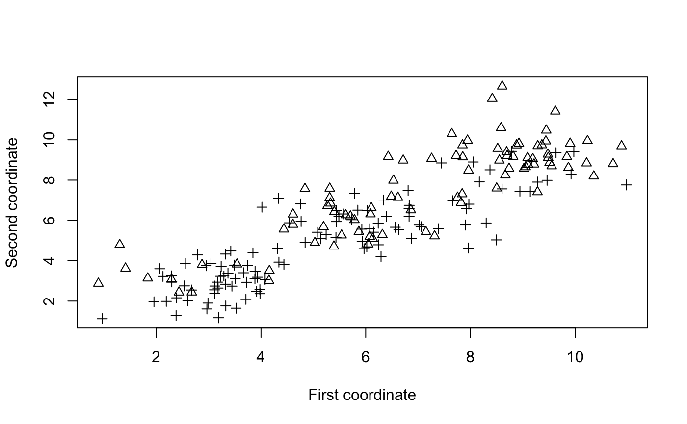
plot(tree@best.tree$tree)
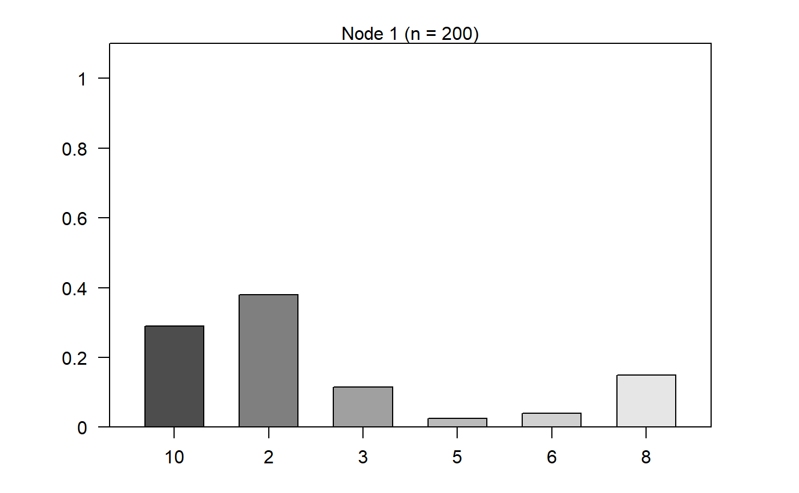
pred = matrix(0, nrow = 0.2*1000, ncol = 1) for (j in levels(data$c_map)) { modele = glm(y ~ x1 + x2, data = data[data$c_map==j,], family=binomial(link = "logit")) pred[test$c_map==j] = predict(modele, test[test$c_map==j,], type="response") } normalizedGini(test$y,pred)
## [1] 0.6658541One “cluster”, three predictive laws
Simulation
data = generateData(n = 1000, scenario = "tree", visualize = TRUE)
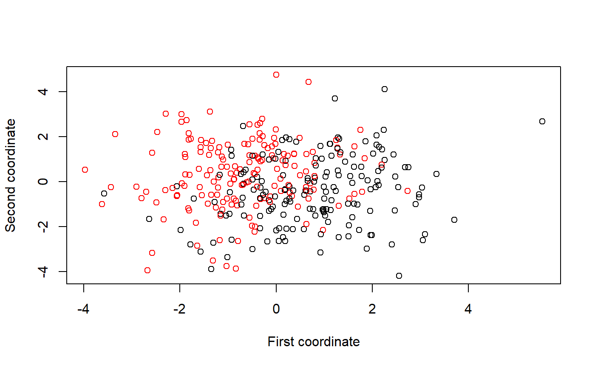 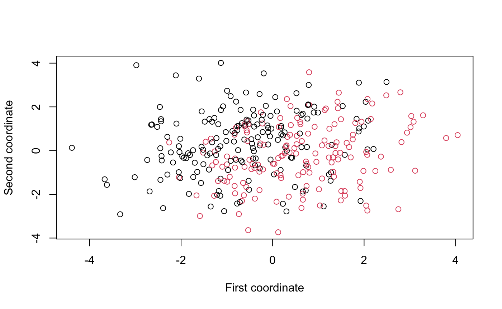
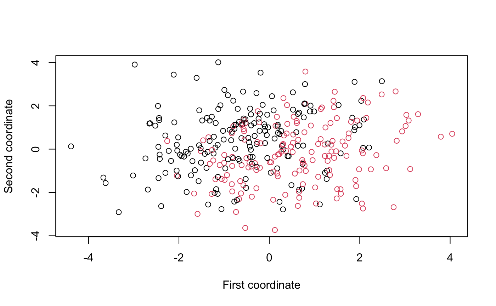
int_train = sample.int(n = 1000, size = 0.2*1000) test = data[-int_train,] data = data[int_train,]
PCA
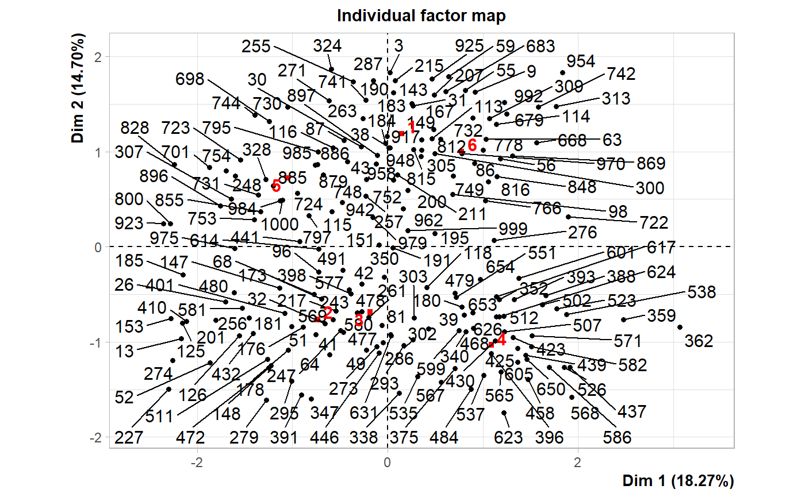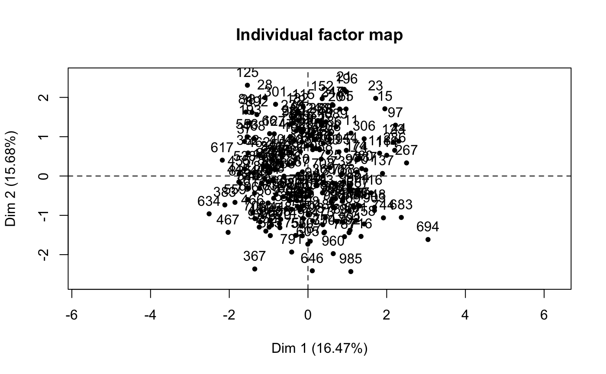 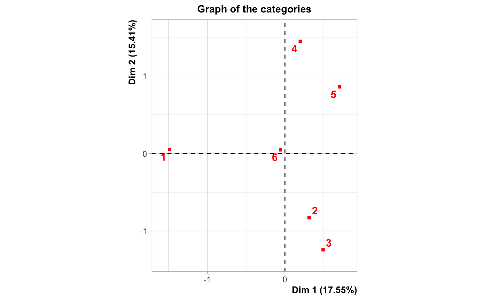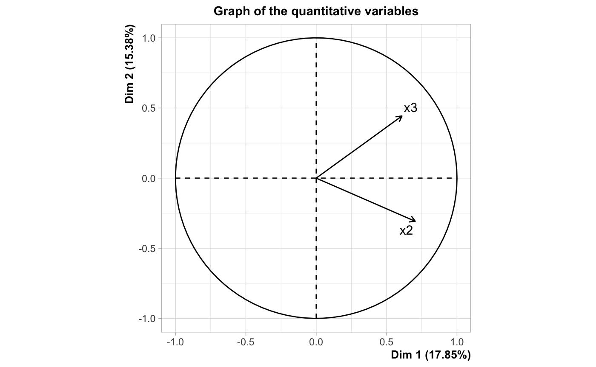
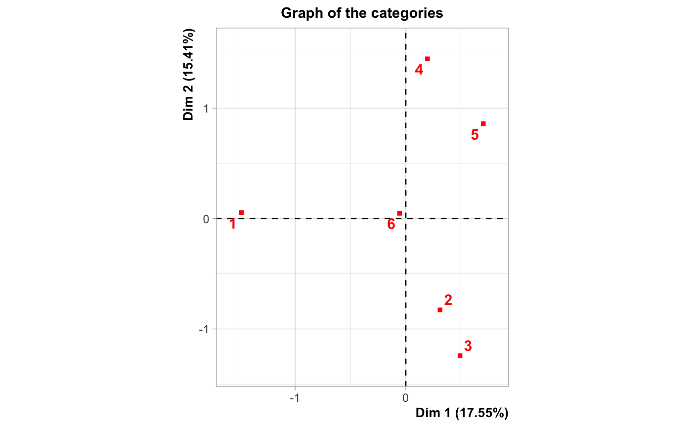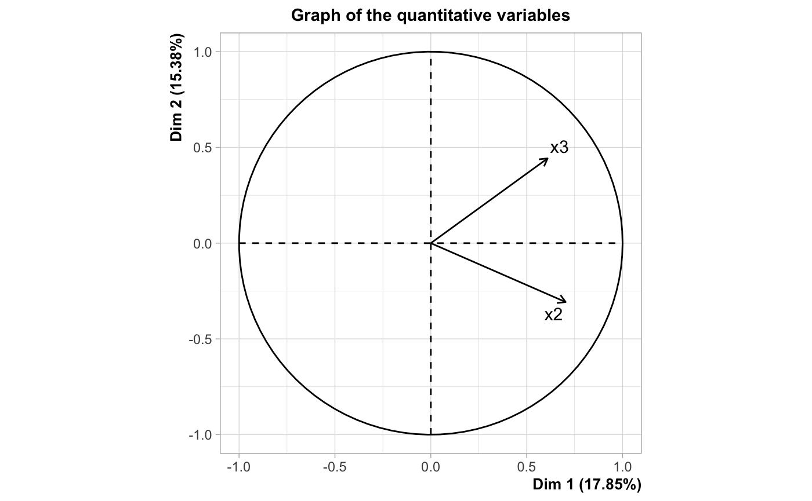
dim_famd = predict(mixed,test)$coord[,"Dim 1"] < 0 pred = matrix(0, nrow = 0.2*1000, ncol = 1) for (j in c(TRUE,FALSE)) { modele = glm(y ~ x1 + x2 + x3, data = data[dim_famd==j,], family=binomial(link = "logit")) pred[dim_famd==j] = predict(modele, test[dim_famd==j,], type="response") } normalizedGini(test$y,pred)
## [1] 0.2065794MOB
if (require(partykit, quietly = TRUE)) { mob_data = partykit::glmtree(formula = y ~ x1 + x2 +x3 | x1 + x2 + x3, data = data, family = binomial) plot(mob_data) normalizedGini(test$y, predict(mob_data,test)) }
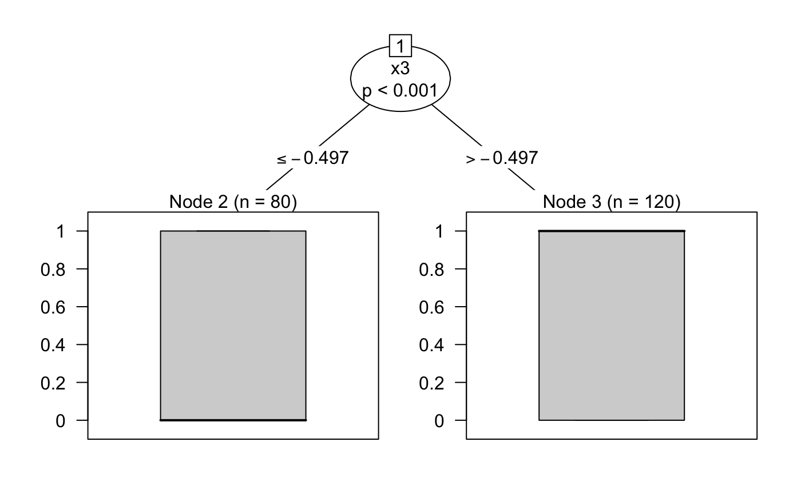
## [1] 0.4277414
glmtree approach
## The bic criterion for iteration 1 is 0## The bic criterion for iteration 2 is -298.632452037724## The bic criterion for iteration 3 is -298.632452037724## The bic criterion for iteration 4 is -298.632452037724## The bic criterion for iteration 5 is -298.632452037724## The bic criterion for iteration 6 is -309.204106835145## The bic criterion for iteration 7 is -309.204106835145## The bic criterion for iteration 8 is -309.204106835145## The bic criterion for iteration 9 is -309.204106835145## The bic criterion for iteration 10 is -309.204106835145## The bic criterion for iteration 11 is -309.204106835145## The bic criterion for iteration 12 is -309.204106835145## The bic criterion for iteration 13 is -309.204106835145## The bic criterion for iteration 14 is -309.204106835145## The bic criterion for iteration 15 is -309.204106835145## The bic criterion for iteration 16 is -309.204106835145## The bic criterion for iteration 17 is -309.204106835145## The bic criterion for iteration 18 is -309.204106835145## The bic criterion for iteration 19 is -309.204106835145## The bic criterion for iteration 20 is -309.204106835145## The bic criterion for iteration 21 is -309.204106835145## The bic criterion for iteration 22 is -309.204106835145## The bic criterion for iteration 23 is -309.204106835145## The bic criterion for iteration 24 is -309.204106835145## The bic criterion for iteration 25 is -309.204106835145## The bic criterion for iteration 26 is -309.204106835145## The bic criterion for iteration 27 is -309.204106835145## The bic criterion for iteration 28 is -309.204106835145## The bic criterion for iteration 29 is -309.204106835145## The bic criterion for iteration 30 is -309.204106835145## The bic criterion for iteration 31 is -309.204106835145## The bic criterion for iteration 32 is -309.204106835145## The bic criterion for iteration 33 is -309.204106835145## The bic criterion for iteration 34 is -309.204106835145## The bic criterion for iteration 35 is -309.204106835145## The bic criterion for iteration 36 is -309.204106835145## The bic criterion for iteration 37 is -309.204106835145## The bic criterion for iteration 38 is -309.204106835145## The bic criterion for iteration 39 is -309.204106835145## The bic criterion for iteration 40 is -309.204106835145## The bic criterion for iteration 41 is -309.204106835145## The bic criterion for iteration 42 is -309.204106835145## The bic criterion for iteration 43 is -309.204106835145## The bic criterion for iteration 44 is -298.632452037724## The bic criterion for iteration 45 is -298.632452037724## The bic criterion for iteration 46 is -298.632452037724## The bic criterion for iteration 47 is -298.632452037724## The bic criterion for iteration 48 is -298.632452037724## The bic criterion for iteration 49 is -298.632452037724## The bic criterion for iteration 50 is -298.632452037724## The bic criterion for iteration 51 is -298.632452037724## The bic criterion for iteration 52 is -309.204106835145## The bic criterion for iteration 53 is -309.204106835145## The bic criterion for iteration 54 is -309.204106835145## The bic criterion for iteration 55 is -309.204106835145## The bic criterion for iteration 56 is -309.204106835145## The bic criterion for iteration 57 is -309.204106835145## The bic criterion for iteration 58 is -309.204106835145## The bic criterion for iteration 59 is -309.204106835145## The bic criterion for iteration 60 is -309.204106835145## The bic criterion for iteration 61 is -309.204106835145## The bic criterion for iteration 62 is -309.204106835145## The bic criterion for iteration 63 is -309.204106835145## The bic criterion for iteration 64 is -309.204106835145## The bic criterion for iteration 65 is -309.204106835145## The bic criterion for iteration 66 is -309.204106835145## The bic criterion for iteration 67 is -309.204106835145## The bic criterion for iteration 68 is -298.632452037724## The bic criterion for iteration 69 is -298.632452037724## The bic criterion for iteration 70 is -298.632452037724## The bic criterion for iteration 71 is -298.632452037724## The bic criterion for iteration 72 is -298.632452037724## The bic criterion for iteration 73 is -298.632452037724## The bic criterion for iteration 74 is -298.632452037724## The bic criterion for iteration 75 is -298.632452037724## The bic criterion for iteration 76 is -298.632452037724## The bic criterion for iteration 77 is -298.632452037724## The bic criterion for iteration 78 is -298.632452037724## The bic criterion for iteration 79 is -298.632452037724## The bic criterion for iteration 80 is -298.632452037724## The bic criterion for iteration 81 is -298.632452037724## The bic criterion for iteration 82 is -309.204106835145## The bic criterion for iteration 83 is -298.632452037724## The bic criterion for iteration 84 is -309.204106835145## The bic criterion for iteration 85 is -298.632452037724## The bic criterion for iteration 86 is -309.204106835145## The bic criterion for iteration 87 is -309.204106835145## The bic criterion for iteration 88 is -309.204106835145## The bic criterion for iteration 89 is -309.204106835145## The bic criterion for iteration 90 is -298.632452037724## The bic criterion for iteration 91 is -298.632452037724## The bic criterion for iteration 92 is -298.632452037724## The bic criterion for iteration 93 is -298.632452037724## The bic criterion for iteration 94 is -298.632452037724## The bic criterion for iteration 95 is -298.632452037724## The bic criterion for iteration 96 is -298.632452037724## The bic criterion for iteration 97 is -298.632452037724## The bic criterion for iteration 98 is -298.632452037724## The bic criterion for iteration 99 is -298.632452037724## The bic criterion for iteration 100 is -298.632452037724## The bic criterion for iteration 101 is -298.632452037724## The bic criterion for iteration 102 is -298.632452037724## The bic criterion for iteration 103 is -309.204106835145## The bic criterion for iteration 104 is -309.204106835145## The bic criterion for iteration 105 is -309.204106835145## The bic criterion for iteration 106 is -298.632452037724## The bic criterion for iteration 107 is -309.204106835145## The bic criterion for iteration 108 is -309.204106835145## The bic criterion for iteration 109 is -309.204106835145## The bic criterion for iteration 110 is -309.204106835145## The bic criterion for iteration 111 is -309.204106835145## The bic criterion for iteration 112 is -309.204106835145## The bic criterion for iteration 113 is -309.204106835145## The bic criterion for iteration 114 is -309.204106835145## The bic criterion for iteration 115 is -309.204106835145## The bic criterion for iteration 116 is -309.204106835145## The bic criterion for iteration 117 is -298.632452037724## The bic criterion for iteration 118 is -309.204106835145## The bic criterion for iteration 119 is -298.632452037724## The bic criterion for iteration 120 is -309.204106835145## The bic criterion for iteration 121 is -309.204106835145## The bic criterion for iteration 122 is -309.204106835145## The bic criterion for iteration 123 is -309.204106835145## The bic criterion for iteration 124 is -309.204106835145## The bic criterion for iteration 125 is -309.204106835145## The bic criterion for iteration 126 is -309.204106835145## The bic criterion for iteration 127 is -309.204106835145## The bic criterion for iteration 128 is -309.204106835145## The bic criterion for iteration 129 is -309.204106835145## The bic criterion for iteration 130 is -309.204106835145## The bic criterion for iteration 131 is -309.204106835145## The bic criterion for iteration 132 is -309.204106835145## The bic criterion for iteration 133 is -309.204106835145## The bic criterion for iteration 134 is -309.204106835145## The bic criterion for iteration 135 is -309.204106835145## The bic criterion for iteration 136 is -309.204106835145## The bic criterion for iteration 137 is -309.204106835145## The bic criterion for iteration 138 is -309.204106835145## The bic criterion for iteration 139 is -309.204106835145## The bic criterion for iteration 140 is -309.204106835145## The bic criterion for iteration 141 is -309.204106835145## The bic criterion for iteration 142 is -309.204106835145## The bic criterion for iteration 143 is -309.204106835145## The bic criterion for iteration 144 is -309.204106835145## The bic criterion for iteration 145 is -309.204106835145## The bic criterion for iteration 146 is -309.204106835145## The bic criterion for iteration 147 is -298.632452037724## The bic criterion for iteration 148 is -298.632452037724## The bic criterion for iteration 149 is -298.632452037724## The bic criterion for iteration 150 is -309.204106835145## The bic criterion for iteration 151 is -309.204106835145## The bic criterion for iteration 152 is -298.632452037724## The bic criterion for iteration 153 is -298.632452037724## The bic criterion for iteration 154 is -298.632452037724## The bic criterion for iteration 155 is -298.632452037724## The bic criterion for iteration 156 is -298.632452037724## The bic criterion for iteration 157 is -298.632452037724## The bic criterion for iteration 158 is -298.632452037724## The bic criterion for iteration 159 is -298.632452037724## The bic criterion for iteration 160 is -298.632452037724## The bic criterion for iteration 161 is -309.204106835145## The bic criterion for iteration 162 is -309.204106835145## The bic criterion for iteration 163 is -309.204106835145## The bic criterion for iteration 164 is -298.632452037724## The bic criterion for iteration 165 is -298.632452037724## The bic criterion for iteration 166 is -298.632452037724## The bic criterion for iteration 167 is -298.632452037724## The bic criterion for iteration 168 is -298.632452037724## The bic criterion for iteration 169 is -298.632452037724## The bic criterion for iteration 170 is -298.632452037724## The bic criterion for iteration 171 is -298.632452037724## The bic criterion for iteration 172 is -298.632452037724## The bic criterion for iteration 173 is -298.632452037724## The bic criterion for iteration 174 is -298.632452037724## The bic criterion for iteration 175 is -298.632452037724## The bic criterion for iteration 176 is -298.632452037724## The bic criterion for iteration 177 is -298.632452037724## The bic criterion for iteration 178 is -298.632452037724## The bic criterion for iteration 179 is -298.632452037724## The bic criterion for iteration 180 is -298.632452037724## The bic criterion for iteration 181 is -298.632452037724## The bic criterion for iteration 182 is -309.204106835145## The bic criterion for iteration 183 is -309.204106835145## The bic criterion for iteration 184 is -298.632452037724## The bic criterion for iteration 185 is -298.632452037724## The bic criterion for iteration 186 is -298.632452037724## The bic criterion for iteration 187 is -298.632452037724## The bic criterion for iteration 188 is -298.632452037724## The bic criterion for iteration 189 is -298.632452037724## The bic criterion for iteration 190 is -298.632452037724## The bic criterion for iteration 191 is -298.632452037724## The bic criterion for iteration 192 is -298.632452037724## The bic criterion for iteration 193 is -298.632452037724## The bic criterion for iteration 194 is -298.632452037724## The bic criterion for iteration 195 is -298.632452037724## The bic criterion for iteration 196 is -298.632452037724## The bic criterion for iteration 197 is -298.632452037724## The bic criterion for iteration 198 is -298.632452037724## The bic criterion for iteration 199 is -298.632452037724## The bic criterion for iteration 200 is -298.632452037724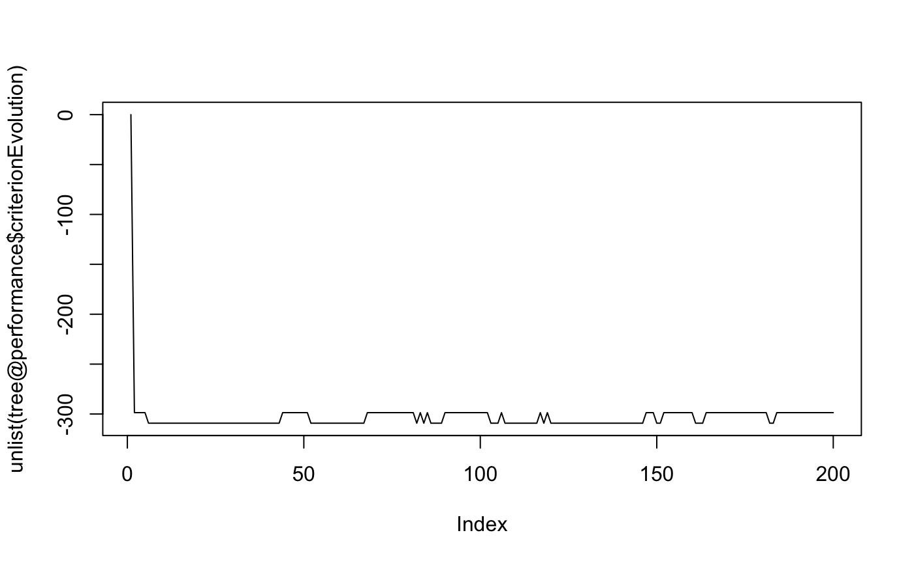
data$c_map <- factor(apply(predict(tree@best.tree$tree,data,type="prob"),1,function(p) names(which.max(p)))) test$c_map <- factor(apply(predict(tree@best.tree$tree,test,type="prob"),1,function(p) names(which.max(p)))) table(data$c,data$c_map)
##
## 3
## 1 74
## 2 60
## 3 66plot(data[,1],data[,2],pch=2+data[,3],col=as.numeric(data$c_map),xlab="First coordinate",ylab="Second coordinate")
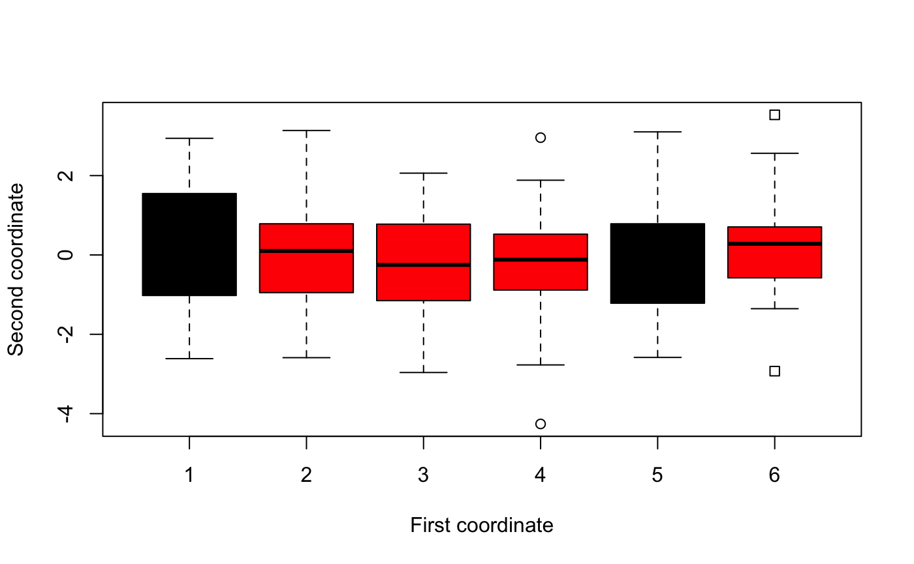
plot(tree@best.tree$tree)
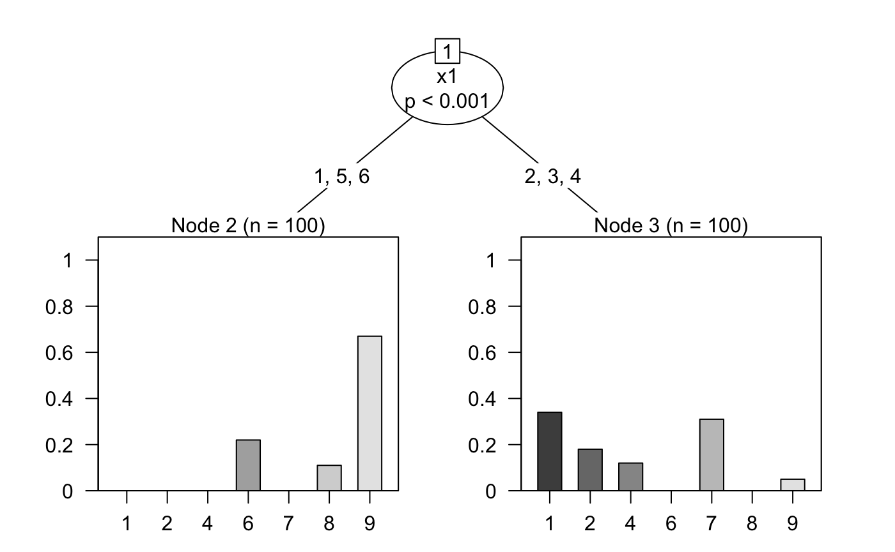
pred = matrix(0, nrow = 0.2*1000, ncol = 1) for (j in 1:nlevels(data$c_map)) { pred[test$c_map==levels(data$c_map)[j]] = predict(tree@best.tree$glms[[j]], test[test$c_map==levels(data$c_map)[j],], type="response") } normalizedGini(test$y,pred)
## [1] 0.2498325